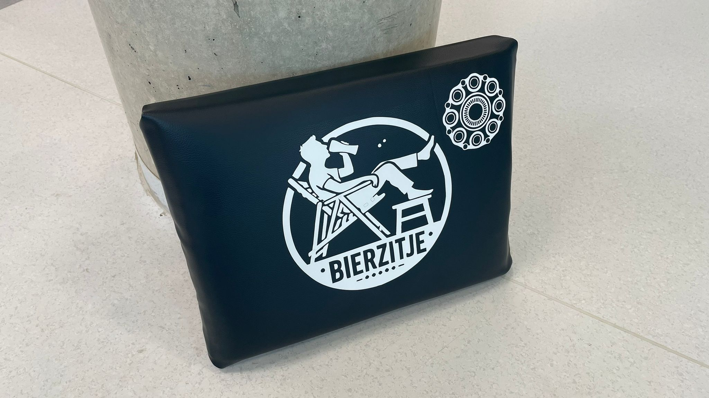
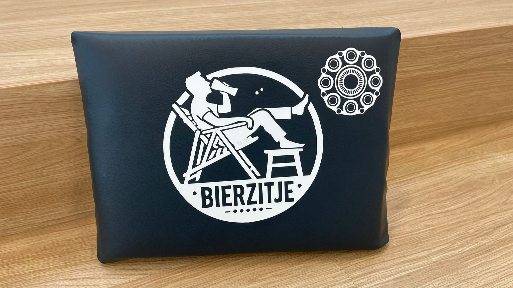
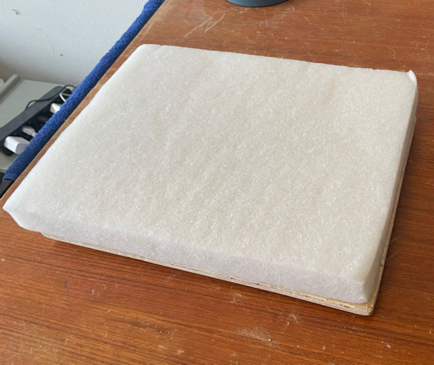
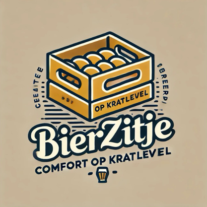

Het Bierzitje




Alles wordt lokaal gemaakt, waardoor de lasten op het milieu beperkt worden.
Een Slimme Zitoplossing
Het Bierzitje is een innovatieve oplossing voor een herkenbaar probleem: het gebrek aan comfortabele en betaalbare zitplaatsen tijdens sociale gelegenheden.
Het product richt zich voornamelijk op jongeren, studenten en sociale groepen die vaak samenkomen bij informele bijeenkomsten zoals festivals, barbecues en studentenfeestjes.